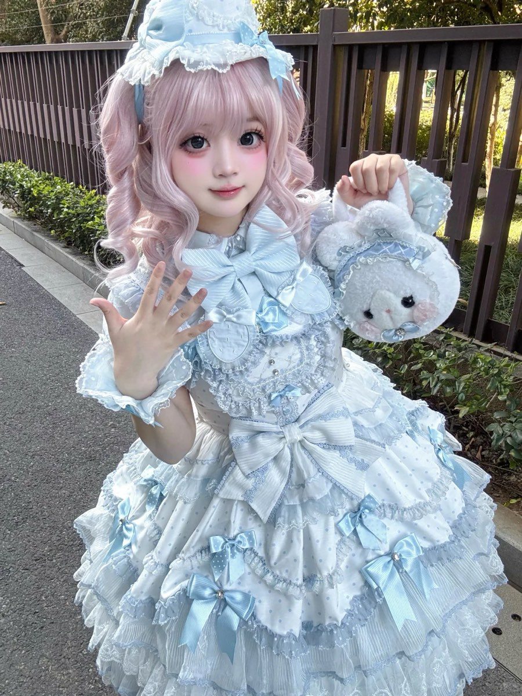
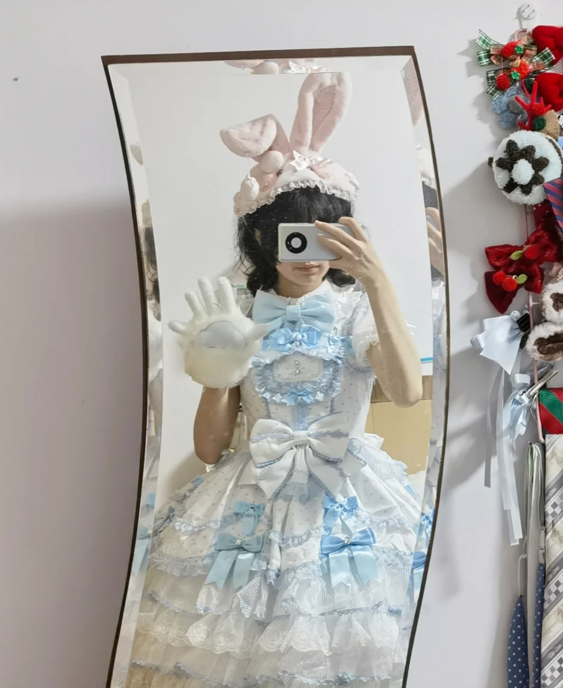
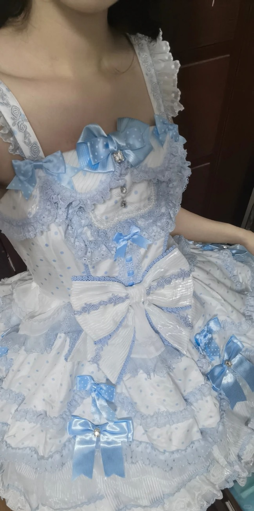
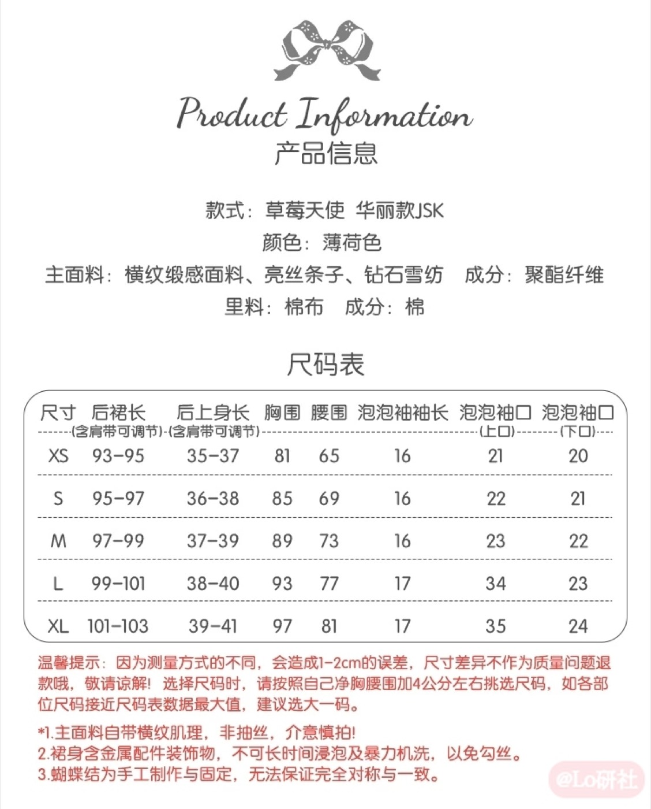

个体自述／可见评论
作者喜欢亮闪的玻璃糖纸观感，未观看视频。
查看对应来源 ↗2.0华丽JSK·蓝波点；具名品牌及门店展示已读，当前SKU待核
配图已补 · 同色规格未找到

新增两条蓝波点实穿自述和两张静态图；原店ID、同色规格及当前SKU按本轮结果标未找到。
“有记录”表示取得对应资料，不等于原店现行批次或实物已全部确认；日期：2026-10-25。
| 核查项 | 状态 | 结果与适用范围 |
|---|---|---|
| 款式与版本 | 有记录 | 已补具名蓝波点华丽JSK品牌/门店展示及两张读图；当前团次、商品ID另核。XA1 ↗ XA4 ↗ XA5 ↗ |
| 商品与店铺入口 | 未找到可核资料 | 同版原店商品ID尚未找到。 |
| 价格与包含物 | 部分有据 | 华丽图鉴参考689元，不能拿普通款499元或SP价替代。T07 ↗ |
| 面料与里料 | 部分有据 | 查到薄荷色信息图；蓝波点是否同料没有证据。T07 ↗ |
| 厘米尺码 | 部分有据 | 仅补薄荷色对照表；蓝波点同版表及袖口异常值待核。T07 ↗ |
| 销售与交期 | 部分有据 | 图鉴尾款窗口是历史记录，不能当当前开团/出货状态。T07 ↗ |
| 穿着反馈 | 部分有据 | 新增单穿略扎/裙撑自述及160斤作者黑紫L、蓝白XL条件；身高、净身围、批次和购买关系仍未齐。XA1 ↗ XA2 ↗ XA3 ↗ XA4 ↗ XA6 ↗ XA7 ↗ XA8 ↗ XA9 ↗ |
对应资料 · XA4 ↗ 核读：2026-10-25
品牌同名账号展示图，搭配物分售情况未核；不是原店当前SKU、厘米尺码或独立实穿验收。
对应资料 · XA8 ↗ 核读：2026-10-25
个人笔记静态图及正文；购买与合作关系、尺码和批次未全部核实，不作为官方规格或普遍性能结论。


对应资料 · T07 ↗ 核读：2026-10-25
仅作同系列分版对照，未补成蓝波点的已确认规格；主图仍不以薄荷色替代蓝波点。
| 尺码 | 后裙长（含肩带） | 后上身长（含肩带） | 胸围 | 腰围 |
|---|---|---|---|---|
| XS | 93–95 | 35–37 | 81 | 65 |
| S | 95–97 | 36–38 | 85 | 69 |
| M | 97–99 | 37–39 | 89 | 73 |
| L | 99–101 | 38–40 | 93 | 77 |
| XL | 101–103 | 39–41 | 97 | 81 |
仅为薄荷色转载表，原图说明误差1–2厘米；不据此判断蓝波点合身或库存。

华丽JSK图鉴参考689元；普通2.0 JSK另列499元、SP另列799元，不混为同一版报价。蓝波点当前SKU价未核。
作者喜欢亮闪的玻璃糖纸观感，未观看视频。
查看对应来源 ↗红白款作者同时肯定上身效果、抱怨触感和褶量；不是相同配色对照。
查看对应来源 ↗作者称蓝波点到家、喜欢清透配色；没有尺码、身围、批次或实购证明，不作质量与合身结论。
查看对应来源 ↗相邻2.0蓝色JSK笔记未锁华丽/蓝波点版本。可见内衬不满与作者不同意见，另有对白色塑料感的评论；仅作核查线索，不转用为本色本版性能反馈。
查看对应来源 ↗作者喜欢蓝波点配色，称单穿可能略扎、需要较强裙撑展开裙摆，并展示蓝/白衬衫和领结搭配。仅为该作者感受，缺尺码、身体条件与批次。
查看对应来源 ↗作者标题自述160斤；正文说黑紫L、蓝白波点XL，黑紫裙长适合自己，XL体感更舒适宽松。配色与尺码同时变化，未给身高数值/净身围；不能据此推荐160斤统一穿XL。
查看对应来源 ↗正文与可见评论已读；未观看的视频不写成视频结论。版本、配色、体型、渠道和推广关系未全部统一。
按当前材料保留缺口；“未找到”不表示信息或款式不存在，取得新资料后再更新。
最近查找：2026-10-25T10:56+08:00。范围：已读品牌/门店具名展示、图鉴与可读公开商品线索、小红书正文及可见评论。
把视觉反光与触感分开测评，同版同色比较后再讨论材料。
这是后续验证问题，不代表已确定的产品定位、定价或质量结论。